WINDSHIELD GLASS > INSTALLATION |
| 1. INSTALL WINDSHIELD GLASS STOPPER |
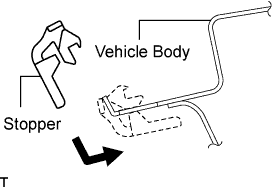 |
Install 2 new stoppers to the vehicle body as shown in the illustration.
| 2. INSTALL NO. 2 WINDSHIELD GLASS STOPPER |
Apply Primer G to the glass where the stopper will be installed.
Install 2 new stoppers onto the glass as shown in the illustration.
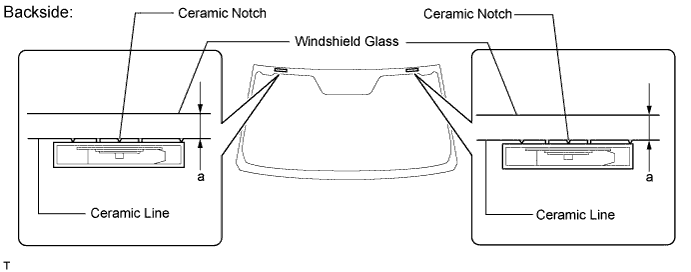
| Area | Specified Condition |
| a | 13.2 mm (0.520 in.) |
| 3. INSTALL WINDSHIELD OUTSIDE MOULDING |
Using a brush or sponge, coat the contact surface of the glass and moulding with Primer G as shown in the illustration.
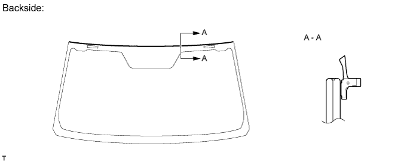
| Temperature | Usage Time Frame |
| 35°C (95°F) | 15 minutes |
| 20°C (68°F) | 1 hour 40 minutes |
| 5°C (41°F) | 8 hours |
Remove the peeling paper from the windshield outside moulding. Install the moulding as shown in the illustration.
| 4. INSTALL WINDSHIELD GLASS ADHESIVE DAM |
Apply Primer G to the glass where the glass adhesive dam will be installed.
Remove the peeling paper from the adhesive part of the dam. Install the dam (adhesive side) to the glass (Primer G area), but exclude the area above the notches on the upper part of the glass.
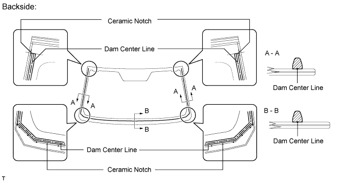
| 5. INSTALL FRONT INNER WINDOW MOULDING COVER LH |
Using a knife, cut off the cover as shown in the illustration.
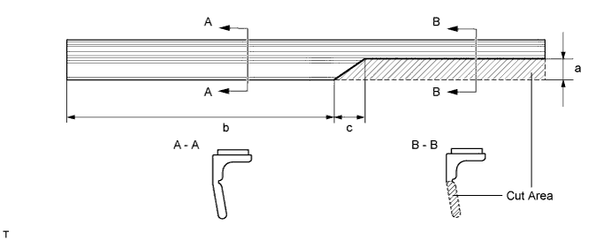
| Area | Specified Condition |
| a | 6.9 mm (0.272 in.) |
| b | 96.5 mm (3.79 in.) |
| c | 10.0 mm (o.394 in.) |
Apply Primer G to the glass where the inner window moulding cover will be installed.
Remove the peeling paper from the inner window moulding cover. Install the cover to the glass, as shown in the illustration.
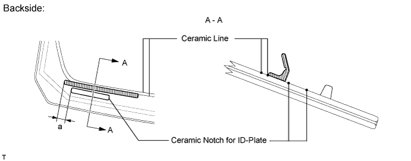
| Area | Specified Condition |
| a | 14.0 mm (0.551 in.) |
| 6. INSTALL WINDSHIELD GLASS |
 |
Position the glass.
Using suction cups, place the glass in the correct position.
Check that the entire contact surface of the glass rim is perfectly even.
Place matchmarks on the glass and vehicle body on the locations indicated in the illustration.
Using suction cups, remove the glass.
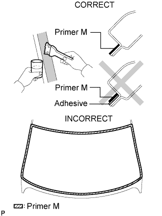 |
Using a brush, apply Primer M to the exposed part of the vehicle body.
Using a brush or sponge, apply Primer G to the contact surface of the glass.
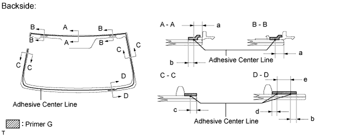
| Area | Specified Condition |
| a | 9.0 mm (0.354 in.) |
| b | 7.0 mm (0.276 in.) |
| c | 3.0 mm (0.118 in.) |
| d | 4.0 mm (0.157 in.) |
| e | 8.0 mm (0.315 in.) |
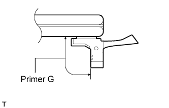 |
Using a brush or sponge, coat the windshield outside moulding with Primer G as shown in the illustration.
Apply adhesive to the glass.
Cut off the tip of the cartridge nozzle as shown in the illustration.
| Temperature | Usage Time Frame |
| 35°C (95°F) | 15 minutes |
| 20°C (68°F) | 1 hour 40 minutes |
| 5°C (41°F) | 8 hours |
Load the sealer gun with the cartridge.
Apply adhesive to the glass as shown in the illustration.
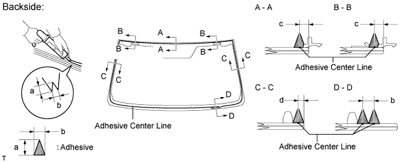
| Area | Specified Condition |
| a | 12.0 mm (0.472 in.) |
| b | 8.0 mm (0.315 in.) |
| c | 9.0 mm (0.354 in.) |
| d | 3.0 mm (0.118 in.) |
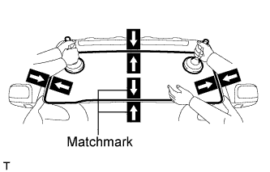 |
Install the glass to the vehicle body.
Using suction cups, position the glass so that the matchmarks are aligned. Press it in gently along the rim.
Lightly press the outer surface of the glass to ensure that it is securely fit to the vehicle body.
Hold the glass in place securely with protective tape or equivalent until the adhesive hardens.
| Temperature | Minimum Time Prior to Driving Vehicle |
| 35°C (95°F) | 1 hour 30 minutes |
| 20°C (68°F) | 5 hours |
| 5°C (41°F) | 24 hours |
w/ Windshield Deicer System:
Connect the windshield deicer connector.
| 7. CHECK FOR LEAK AND REPAIR |
Conduct a leak test after the adhesive has completely hardened.
Seal any leaks with auto glass sealer.
| 8. INSTALL ROOF HEADLINING |
w / Sliding Roof:
Return the roof headlining to its original position. Refer to the following procedures (Click here).
w /o Sliding Roof:
Return the roof headlining to its original position. Refer to the following procedures (Click here).
| 9. INSTALL RAIN SENSOR TAPE (w/ Rain Sensor) |
 |
Apply new rain sensor tape to the rain sensor surface, indicated by the hatched area.
| Area | Measurement |
| A | 15 mm (0.591 in.) |
| B | 8 mm (0.315 in.) |
| 10. INSTALL RAIN SENSOR (w/ Rain Sensor) |
 |
Securely attach the rain sensor to the bracket.
Push in the stopper.
Connect the connector.
| 11. INSTALL RAIN SENSOR COVER (w/ Rain Sensor) |
Push in the stopper in the direction of the arrow labeled (1) to install the rain sensor cover.

Slide the No. 2 cover in the direction of the arrow labeled (2) to fix it in place.
| 12. INSTALL INNER REAR VIEW MIRROR ASSEMBLY (w/ EC Mirror) |
 |
Using a T20 "TORX" socket wrench, install the inner rear view mirror with the screw.
Connect the connector.
| 13. INSTALL INNER REAR VIEW MIRROR ASSEMBLY (w/o EC Mirror) |
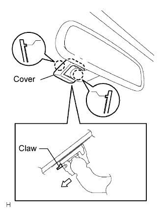 |
Install the mirror in the direction of the white arrow.
Install the cover with the 2 claws.
| 14. INSTALL INNER REAR VIEW MIRROR STAY HOLDER COVER (w/ EC Mirror) |
 |
Detach the 2 claws and remove the cover as shown in the illustration.
| 15. INSTALL CENTER VISOR ASSEMBLY LH |
| 16. INSTALL CENTER VISOR ASSEMBLY RH |
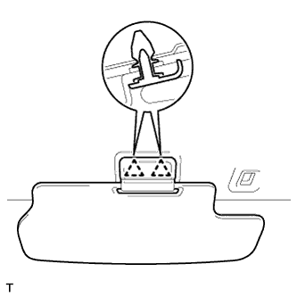 |
Attach the 2 clips to install the center visor.
| 17. INSTALL VISOR HOLDER |
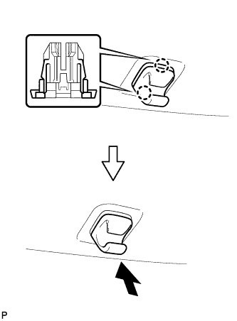 |
Attach the 2 claws.
Push the visor holder in to install it.
| 18. INSTALL VISOR ASSEMBLY LH |
 |
Install the visor with the 2 screws.
| 19. INSTALL VISOR ASSEMBLY RH |
| 20. INSTALL VISOR BRACKET COVER |
 |
Attach the 4 claws to install the visor bracket cover.
| 21. INSTALL MAP LIGHT ASSEMBLY |
Connect the connector.
Attach the 2 clips and 2 guides to install the map light.
Install the 2 screws.
Attach the 2 claws to close the 2 covers.

| 22. INSTALL FRONT PILLAR GARNISH LH |
 |
for 9 Speakers:
Connect the speaker connector.
Attach the clip and 3 guides to install the front pillar garnish.
| 23. INSTALL FRONT PILLAR GARNISH RH |
| 24. INSTALL FRONT ASSIST GRIP SUB-ASSEMBLY |
 |
Attach the 2 claws to install the front assist grip.
Install the 2 bolts.
 |
Attach the 4 claws to install the 2 assist grip plugs.
| 25. INSTALL ROOF DRIP SIDE FINISH MOULDING CLIP |
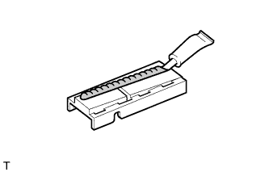 |
Apply a 2 to 3 mm (0.0787 to 0.118 in.) bead of adhesive (3M DP-105 or equivalent) to a new roof drip side finish moulding clip.
Apply primer to the body where the roof drip side finish moulding clip will be installed.
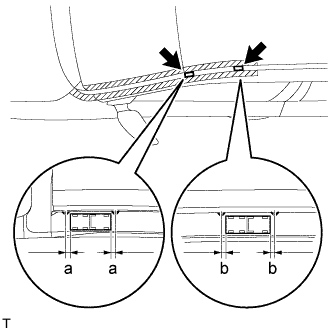 |
Install the clips to the positions on the roof panel shown in the illustration. Determine the locations and firmly press and install the roof drip side finish moulding clip after lightly applying adhesive (3M DP-105 or equivalent).
| Area | Specified Condition |
| a | -0.5 to 9.5 mm (0.0197 to 0.374 in.) |
| b | -0.3 to 3.0 mm (-0.118 to 0.118 in.) |
Install the windshield outside moulding when 40 minutes or more have elapsed after pressing and installing the roof drip side finish moulding clip.
| 26. INSTALL NO. 3 WINDSHIELD OUTSIDE MOULDING CLIP |
Install a nose piece to an air riveter or hand riveter.
Insert the mandrel part of a new No. 3 windshield outside moulding clip into the nose piece.
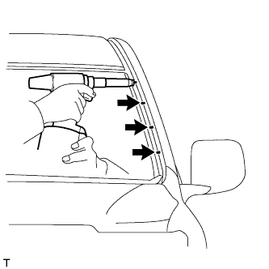 |
Using the riveter, install the No. 3 windshield outside moulding clip(s) shown in the illustration.

 |
 |
| 27. INSTALL NO. 4 WINDSHIELD MOULDING PAD |
 |
Install the 4 No. 4 moulding pads.
| 28. INSTALL WINDSHIELD OUTSIDE MOULDING LH |
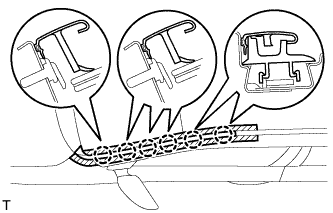 |
Attach the 6 clips to install the moulding.
Remove the protective tape from the edges of the moulding.
| 29. INSTALL WINDSHIELD OUTSIDE MOULDING RH |
| 30. INSTALL COWL TOP VENTILATOR LOUVER SUB-ASSEMBLY |
 |
Push the ventilator louver in the direction indicated by the arrow in the illustration to attach the 17 claws and 2 clips and install the ventilator louver.
| 31. INSTALL FRONT FENDER MAIN SEAL LH |
 |
Attach the 3 clips to install the fender main seal.
| 32. INSTALL FRONT FENDER MAIN SEAL RH |
| 33. INSTALL UPPER RADIATOR SUPPORT SEAL |
Install the radiator support seal with the 7 clips.

| 34. CONNECT CABLE TO NEGATIVE BATTERY TERMINAL |
| 35. INSTALL FRONT WIPER ARM LH |
 |
Stop the wiper motor at the automatic stop position.
Clean the wiper pivot serration with a wire brush.
 |
Install the wiper arm and blade with the nut. Make sure that the wiper arm and blade comes to the position shown in the illustration.
| Position | Specified Condition |
| A | 16.8 to 36.8 mm (0.661 to 1.45 in.) |
| 36. INSTALL FRONT WIPER ARM RH |
|
Stop the wiper motor at the automatic stop position.
Clean the wiper pivot serration with a wire brush.
 |
Install the wiper arm and blade with the nut. Make sure that the wiper arm and blade comes to the position shown in the illustration.
| Position | Specified Condition |
| B | 20.0 to 40.0 mm (0.787 to 1.57 in.) |
Operate the front wipers while spraying washer fluid on the windshield glass. Make sure that the front wipers function properly and there is no interference with the vehicle body.